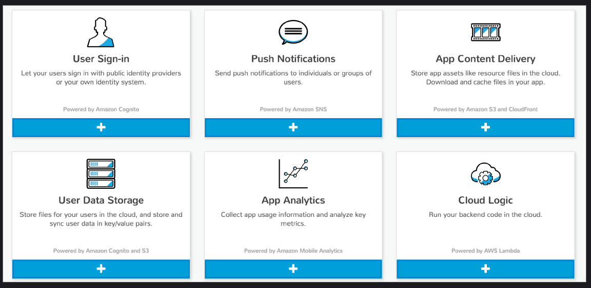
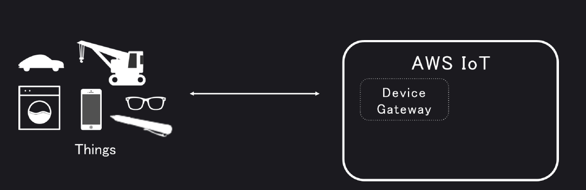
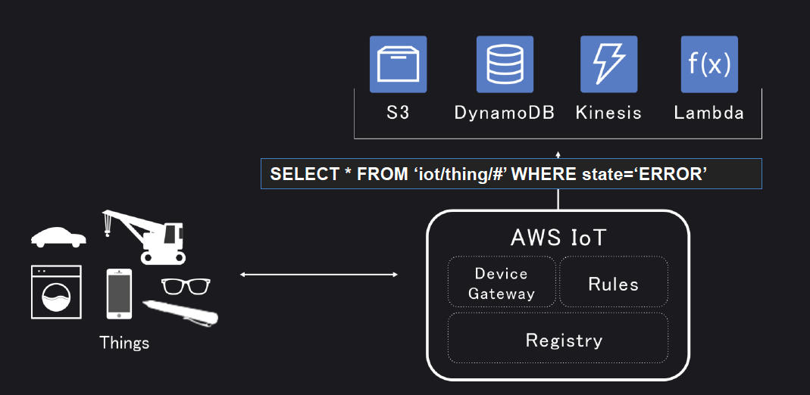
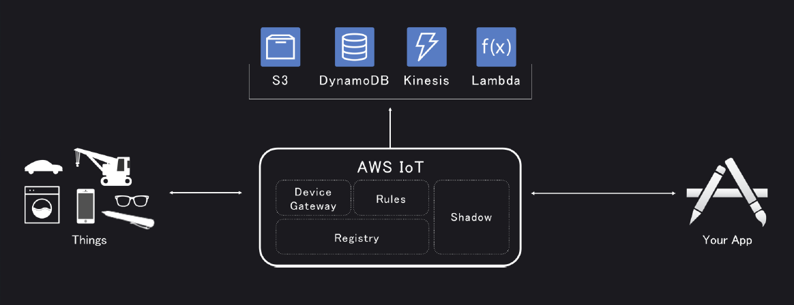

Mobile/IoTについての新サービスの発表がありました。
AWS Mobile Hub
- AWSが提供する、各種のサービスを組み合わせて、モバイルアプリケーションを簡単に構築するためのサービス
- ウィザード形式で必要とする機能（ユーザー認証やアラート送信）を選択し、
アプリケーションを作成するためのベースとなるコードのテンプレートを生成する事が可能 - コード作成後のテストを実行する事も可能

AWS IoT
簡単にIoTアプリケーションを作ることのできるサービス
Device Gateway
軽量なプロトコルを用いつつ、セキュリティを確保した通信を実現

Rules
デバイスからのメッセージをルールに基づいて様々なアプリケーションに引き渡すためのサービス
ルールは、SQLライクな文法で書けるので、とても簡単

Shadow
デバイスに対してのコミュニケーションを容易にするためのサービス

モノが常にネットワークに接続されているとは限らないので、
接続されてないときには１回メッセージをためておいて、
モノがネットワークにつながったら、またメッセージを送る、、、
ということができる。
つまり、こっちはモノがネットワークに繋がっているかどうかを意識しなくていい！
展示ブースにIoTの実物がたくさんあったので、見てきました。
コチラの温室は、温度や湿度の管理に Amazon IoT を使っているそうです！
AWS IoT関連セッションに参加するとIoT Button がもらえて、いろいろ自分でためすこともできたようなんですが、
私はその情報を知らず、もらえませんでした。。。
新サービスのセッションに行くと、いろいろ面白そうです。
来年参加されるかたはぜひ、、、